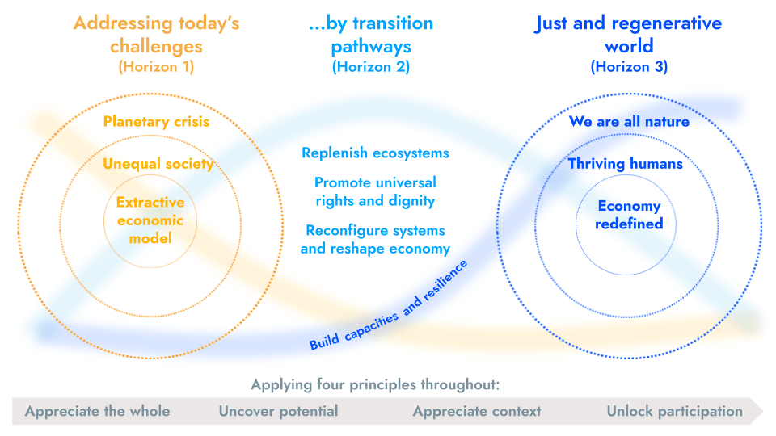

FORUM FOR THE FUTURE: Our 2023-2025 strategy
Three transitions, one opportunity to transform for a just and regenerative future
A more sustainable future in which people and the planet can thrive is within our grasp. Creating it will mean embracing the immensely unsettled nature of a world that is changing, every day.
Among the multiple transitions already in play, Forum believes three offer genuinely game-changing potential to address our intensifying environmental, social and economic crises: how we think about, produce, consume and value both food and energy, and the role of business in society and the economy.
With increased attention and investment, current momentum behind these transitions is encouraging. And yet, we’re not seeing the results we need.
Why? We believe that, for too long, interventions have been both shallow and piecemeal - addressing specific problems in isolation, but failing to maintain momentum and to tackle the root causes of the issue. ‘Fixes’ that ultimately fail - going neither far enough or fast enough, while simultaneously risking unintended consequences.
The sustainability movement can no longer afford to fall short.
That’s why we’re honing our focus on enabling deep, deliberate and urgent transformation.
We’re collaborating with ambitious and diverse change-makers working in our energy, food and market systems to influence how people feel, think, act and collaborate to transform the way the world works.
The main elements of our strategy
What we stand for
Systemic interventions capable of creating a just and regenerative future in which both people and the planet thrive.
Where the world could get to: our vision
We believe greater ambition is needed to tackle today’s escalating challenges. That’s why we’re looking beyond long-established but now no longer fit-for-purpose notions of ‘sustainability’ and even ‘net positive’.
Forum’s vision is a truly just and regenerative future in which:
- our social and environmental systems are capable of adapting to and addressing challenges of the future with flexibility and resilience
- the world has moved beyond artificial divides between people, nature and economy - integrating ways to stabilise the planet, restore and replenish our ecosystems, and promote dignity, fulfilment and equity for all
- the meaning of a ‘prosperous economy’ is redefined as one that meets the needs of everyone in society to thrive, distributes value fairly, and operates in harmony with nature and planetary boundaries
- the root causes of today’s biggest challenges - the climate emergency, nature in crisis and systemic inequality - have been tackled by dramatically reconfiguring the systems on which we rely.
Explore the what, why and how of 'just and regenerative'.
How we get there
The transitions that we seek in food, energy and the role of business are part of a wider transition to a just and regenerative world. Essential ingredients, but not the only ones. In working on these three transitions, we will be exploring, applying and inspiring just and regenerative principles.
We do not claim to have all the answers but believe the pathways between today's degenerative world and the future we seek must entail four key ingredients: building capacity to thrive; reconfiguring the economy and other systems; promoting universal rights and dignity; and replenishing ecosystems.
There is no blueprint for the journey. Indeed we believe the opposite. Our core principles are to appreciate and adapt to real-world context, unlock genuine participation, uncover potential to create new solutions, and look at the whole system.
Figure 1: Applying a Three Horizons framework to our thinking on just and regenerative

Above: Forum for the Future’s vision of a more just and regenerative future (‘horizon 3’), in which we have tackled today’s challenges (‘horizon 1’: a planet in crisis; an unequal society; an economic model based on short-termism) by following four ‘transition pathways’ (‘horizon 2’: replenishing ecosystems; promoting universal rights and dignity; reconfiguring systems and reshaping the economy; building capacities and resilience).
Our overarching goals
By 2030, Forum has helped to enable a deep and urgent transition:
- of our food system to enable equitable access to nutrition for all whilst securing sustainable livelihoods for producers and restoring nature. We will work to enable a socially just and ecologically safe transition to a system in which food is produced and consumed in a way that is safe, affordable, nutritious and sustainable for all. A future-fit food system will optimise for people and the planet, balancing health and nutritional outcomes with restoration of the ecosystems and farming livelihoods on which we all depend. This will be underpinned by both climate mitigation and adaptation practices, with a focus on mainstreaming regenerative agriculture, enhancing resilience and transforming the supply chains that deliver key commodities from plant to plate, crop to cup.
- to renewable energy that is ecologically safe, socially just and resets the goals of the energy production system. We will work to shift to a system that: is radically decarbonised and resilient in a rapidly changing world; depends wholly on renewables and/or other carbon-neutral sources; actively engages those who produce, trade and consume energy in the sector’s development; prioritises universal energy access by providing affordable, reliable, ecologically safe and human-rights respecting energy.
- in the role of business to drive a just and regenerative economy. We will work with business leaders and other change actors in the market system to shift how and why business operates. We are looking to reset business as a driver of a just and regenerative economy in which people and the planet take priority.
Just imagine: an agricultural system that impoverishes the land and its people transformed to one capable of feeding more than nine billion in healthy, affordable and sustainable ways; a fossil fuel-based energy system transformed to a renewable one that supports communities and allows natural systems to regenerate; business models and economies that currently prioritise short-term profits transformed to prioritise social and planetary wellbeing.
Three transitions moving at pace and on track to stabilise our climate, restore our natural ecosystems and reverse inequality.
So how will we recognise deep transformation?
Characteristics include:
- changing the goals of key socio-economic systems to prioritise just and regenerative outcomes
- building capacity for natural and social systems to thrive
- addressing the root causes of our challenges and past imbalances
- shifting mindsets so that people appreciate the interconnections between people and the planet
- repatteringing power dynamics
- acting at a scale and pace commensurate to the challenge.
What this all means for what’s changing at Forum
- A concerted move to build new (and cultivate existing) relationships with multiple and key influencers whose place and power in the food, energy and/or market systems gives them agency. We will enable them to make the greatest difference possible not only across their immediate operations, but across the broader system in which they operate
- A stronger focus on using futures for sustainability tools and techniques
- A doubling down on the urgent need for systems change and asking for greater accountability among our partners and collaborators in driving it
- A tighter portfolio of programmes
- The School of System Change will now operate in partnership with Forum as our sister organisation, rather than as one of our programmes. With more independence, the School is primed to flourish in pursuit of a world where people embrace complexity and address the challenges of our time through new ways of thinking, acting and being. As the field of systems change continues to evolve, the School will support networks, organisations and individuals to collectively learn, to navigate various tools and methods, and to apply this thinking to their own challenges. The goal: to nurture more and more change-makers to enact deep, lasting change
- Creating interventions with real potential to tackle both environmental and social challenges; not one or the other
- A stronger focus on equality, diversity and inclusion both externally in our programmes, and internally as part of building a thriving international organisation
- An eye over bigger changes at play, such as the changing use of land, the changing role of the finance sector and what new economic models may be emerging. We will also demonstrate proof-points that transformation is not only necessary, but possible
- A move away from partnerships, programmes and interventions that we feel lack the ambition needed, or that fail to aim for deep transformation over shallow, incremental gains. We will also be more vocal - speaking out quickly and boldly where we feel solutions fall short, or may potentially lock in unsustainable practices.
SOURCE: FORUM FOR THE FUTURE